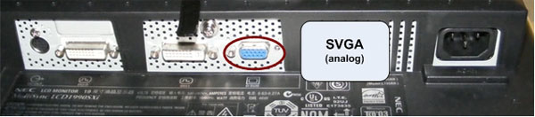
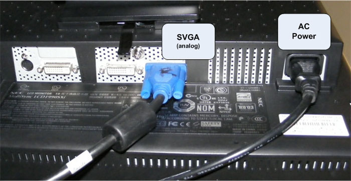
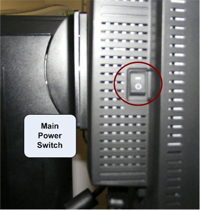
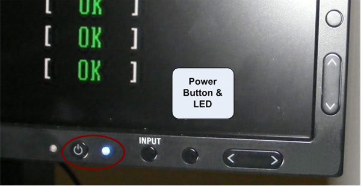
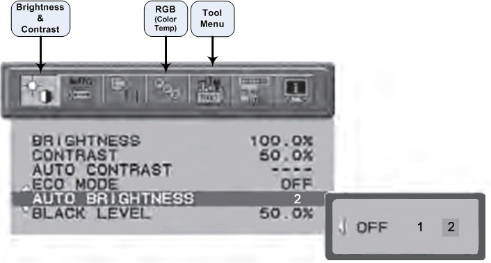
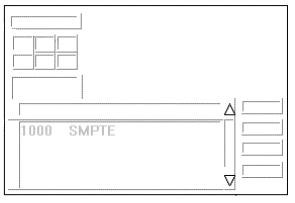

Operating Documentation
Direction 5321294, Rev# 3
GOC6 Service Methods
Operating Documentation |
| Required Persons | Preliminary Reqs | Procedure | Finalization |
|---|---|---|---|
| 1 | 0 min | 20 mins | 0 min |
This procedure outlines the process required to reset and set up a MultiSync LCD 19-inch Monitor. If a system has more than one of these monitors, each must be setup. The procedure time listed above is for each monitor. An active video input signal must be connected to each monitor to perform this process.
| NOTE: | Adjustments made with the monitor's display setup (OSM) has no affect on filmed images. Adjustments made in the Operator Workspace of the Operator Console's (which is displayed on the monitor) will impact filmed images. |
| NOTE: | For an overview of monitor front panel controls and monitor informational messages, see LCD Video Monitor Overview |
| Last Revised on: | July 30, 2008 |
Connect the 15-pin Sub-D connector cable(s) between the Operator Console’s HOST and each monitor’s blue connector INPUT 2 D-SUB. See Illustration 1.
| NOTE: | Do not use either of the two (2) manufacturer’s supplied cables. |
Illustration 1: Monitor Video Input

Connect the AC in line cord from the Operator Console to each monitor's rear side using the GE supplied console power cord. See Illustration 2.
| NOTE: | Do not use the manufacturer's supplied power cord. |
Illustration 2: Power Cord Connection

Apply power to each monitor by setting the Main Power Switch on the left side of the monitor to the ON position. See Illustration 3.
| NOTE: | The Main Power Switch is a true on/off switch. If the switch is in the OFF position, the monitor cannot be turned on using the power button. |
Illustration 3: Main Power Switch

Press the front panel far right button to apply power to each monitor. Verify the blue LED is illuminated. See Illustration 4.
Illustration 4: Monitor Power Button and LED

The monitor may perform an Auto Adjust referred to as the No Touch Auto Adjust function. This function is activated only when a new video signal (Analog input only) is received for the first time.
The operator workspace monitor must be properly adjusted for the filmed image to accurately represent the console monitor displayed image. This procedure describes how to adjust the monitor to match the camera. Once the monitor is re-calibrated, it is essential to re-calibrate the camera before the system is used for filming. (Note that this procedure is only for the LCD color monitor and not for the CRT monitor.)
The Society of Motion Picture and Television Engineers (SMPTE) test pattern is used to provide a standard image for calibrating the Contrast, Brightness, Window, and Level of the display for a scanner. See Illustration 5.
Illustration 5: Sample Test Pattern

Access the Common Service Desktop (CSD).
From the CSD select the Image Quality tab.
From the menu select Install SMPTE pattern image. An Installation Window will appear.
Allow the SMPTE pattern to load. A "Successful Copy" message will appear when the load is complete.
| NOTE: | It can take as long as 10-12 minutes for the SMPTE pattern to load. Load progress shows up as successive dots in the Installation Window. |
Press <Enter> to leave the Installation Window.
Click the [Image Works] icon, and select the Image Browser
Use the scroll bar, as required, to select the SMPTE test image from the Exam list.
Click Full Viewer. If necessary, use the FORMAT option to select Full Screen mode.
Leave the SMPTE test pattern on the monitor and proceed to Section 4.2.2, NEC1990 SXi On-Screen Manager (OSM) setup.
Access OSM on monitor display by pressing Exit, Left, Right, Up or Down control buttons on monitor.
| NOTE: | OSM detail can be found here OSM Control Buttons |
Due to the fact that OSM can be accessed by anyone, custom setting can be altered. To assure correct baseline settings, first reset to monitor back to factory presets by navigating to Menu Tools > Factory Presets and pressing SELECT.
Illustration 6: OSM Settings

Find and select AUTO CONTRAST setting.
Find and select Option 2 for AUTO BRIGHTNESS.
Find and set AccuColor Controls and select Option 1. Option 1 sets color temperature to 9300K.
Press [Exit] control button to turn off OSM on the monitor display.
Press [Exit] control button to turn off OSM on the monitor display.
Set the default Window and Level Setting to 100.
With the cursor inside the image displayed in Illustration 7, hold down the middle mouse button and move the mouse in the horizontal plane. View the window control value at the base of the image and set the window control value to 100.
Illustration 7: Setting Window Control Values

With the cursor inside the displayed image, hold down the middle mouse button and move the mouse in the vertical plane. View the level control value at the base of the image and set level control value to 1024.
Remove the SMPTE Pattern by selecting a different Exam from the browser, or by selecting <ESC> on the keyboard.
| NOTE: | These settings will remain in effect even if power is removed or the system is re-booted. |
| NOTE: | Because Operators are able to adjust Brightness and Contrast, they should be made aware of the impact on display image quality of doing so. If an Operator chooses to deviate from the above setup, the look of the camera film may be impacted as well. |
Place your hands on the side of the monitor.
Lift or lower the monitor to the desired height. See Illustration 8.
Illustration 8: Raise or Lower LCD Monitor Screen

Grasp both sides of the monitor screen with your hands.
Adjust the monitor tilt and swivel as desired. See Illustration 9.
Illustration 9: LCD Monitor Tilt and Swivel

No finalization required.